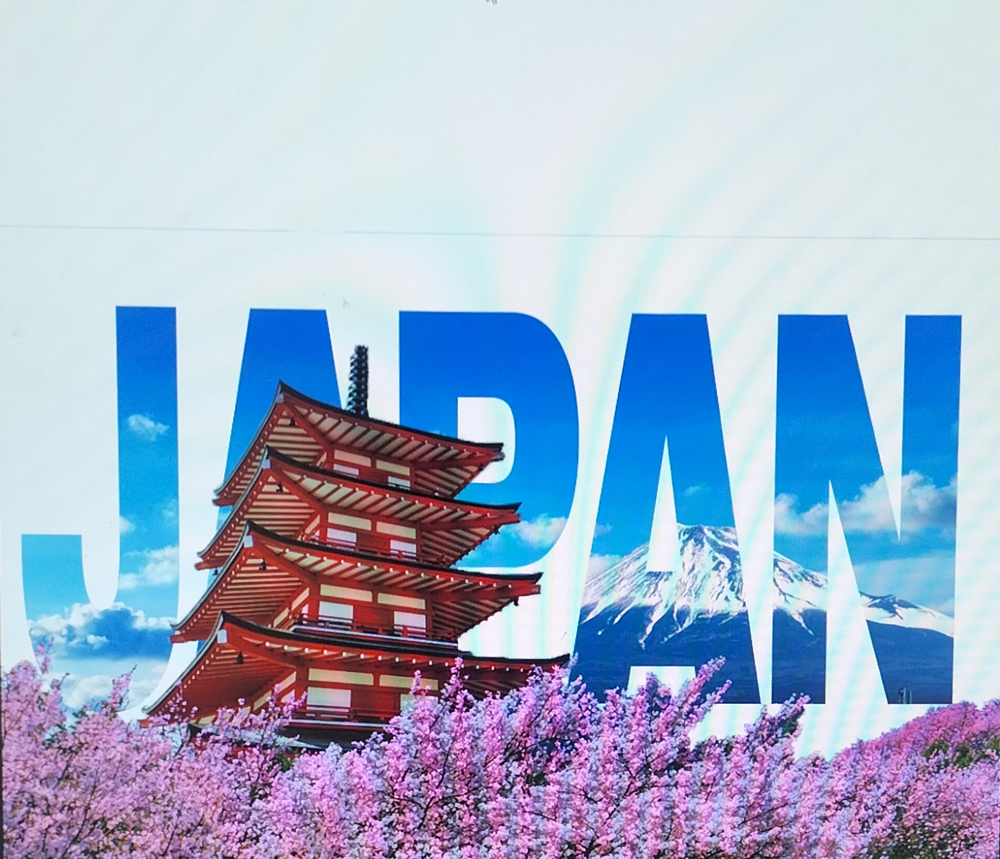

Visual and travel design of japan
This is a simple design of Japan to improve my skills in Multimedia Arts, especially in combining typography and imagery into a cohesive visual. By blending iconic elements of Japan with bold text, I aimed to practice creativity, composition, and how to make designs more visually engaging and meaningful.